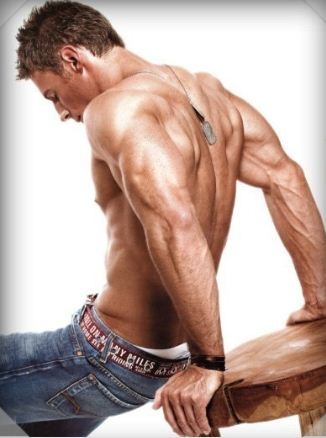

일본생활에 대하여
- 공부
- 운동
- 계획
- 일과
운동
1.운동계획
기본적으로 상체를 주로 하고싶다.
가장 키우고 싶은 근육은 등,그리고 가슴이다. 팔근육도 키우고싶지만 현재 기구
도 없는 홈트이기에 제한이 있다. 그러므로 맨몸운동으로 몸을 키우고자 한다.
2.스트레칭
현재 나는 불균형에다가 라운드숄더 그리고 거북목이기에 스트레칭을 자주하려고한다.
3.음식
기본적으로 닭가슴살을 먹으려고한다.
아침에 계란1 점심에 계란2 저녁에 닭가슴살 그렇지만 메인 운동인 아침운동이후에
먹는 단백질이 없어서 현재 프로틴을 살지 고민이다.
